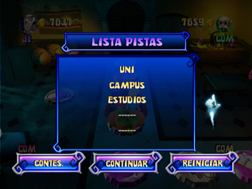

12 |
Pistas, pergaminos y Carrera Final |
 |
Pantalla para comprar un pergamino Cuando el vehículo pasa por una casilla Pergamino, puedes decidir si quieres comprar un pergamino mágico. Si lo compras, el pergamino se abrirá y dará una pista. Si no quieres comprar el pergamino, se mostrará la ubicación del siguiente pergamino mágico y el vehículo seguirá avanzando. Cada nuevo pergamino costará un poco más que el anterior: Modo fácil
Modo medio
Modo difícil
Pantalla de nueva pista Después de comprar un pergamino, puedes acceder a esta pantalla y ver una nueva pista. Pantalla Lista pistas  Esta pantalla aparece después de la pantalla en la que se muestra una nueva pista. Muestra todas las pistas reunidas en el juego y podrás elegir si quieres intentar acertar la contraseña, continuar con el juego o reiniciar las pistas y la contraseña y continuar. Te costará 200 monedas reiniciar las pistas y la contraseña, ¡pero cuidado!, si no tienes suficientes monedas no podrás reiniciar, tendrás que intentar dar una respuesta o seguir jugando para reunir más dinero. Pantalla para introducir contraseña Si eliges ‘Contes.’ en la pantalla de la lista de pistas, accederás a la pantalla de introducción de la contraseña. Puedes elegir entre introducir la contraseña o volver al tablero para continuar el juego. Elige ‘Pistas’ para ver las pistas. Pantalla de contraseña errónea Si introduces una contraseña errónea, se mostrará la ubicación del próximo pergamino mágico y serás penalizado con 200 monedas. Pero si ya tienes 5 pergaminos, deberás intentar introducir la contraseña de nuevo o reiniciar todas las pistas y la contraseña (a cambio de 200 monedas). Pantalla de enhorabuena Si introduces la contraseña correcta, se mostrará la pantalla de enhorabuena. Tras esta pantalla, hay un último minijuego. Carrera Final Tras conseguir el tesoro, los cuatro jugadores deben jugar el ultimo minijuego, la Carrera Final, que es similar al minijuego Corre, Corre (para más detalles, consulta la sección del modo Minijuegos). Ambos se juegan manteniendo el mando de Wii en posición horizontal, y el jugador puede pulsar el Botón 2 para hacer un ataque con efecto. Sin embargo, hay algunas diferencias clave entre los dos minijuegos; una de ellas es el mapa de juego. Otros aspectos importantes del juego Carrera Final que lo diferencian de Corre, Corre son: 1) si un fantasma toca a un jugador, este último perderá algunas monedas pero no será eliminado; 2) los caballeros atacarán a los jugadores, lo que provocará que estos pierdan algunas monedas si son golpeados; 3) la puntuación inicial de los jugadores será la cantidad total de dinero que hayan acumulado en el juego hasta ese momento. |
 |
 |
 |